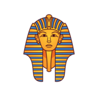
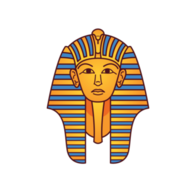
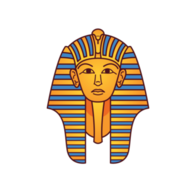
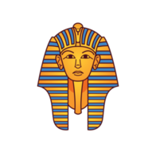

I'm Xander.
a programmer.
 

I am a Junior Web Developer, I love coffee, staying active and inspiring others to persue their dreams. I'm at my most passionate when allowed freedom to think and create.

I started my career within the Marketing field, gaining valuable experience over the years until I finally decided I wanted to use my creativity in a different way, I have since started studying Web Development and quickly realised I have a knack for it. My goal is to continue learning and growing within this field and I hope to make a mark and inspire everyone to set and persue their own goals.
Ever since I was a small boy I have been fascinated with Ancient Egypt, I have continued this fascination throughout my life with various Ancient cultures, however, Egypt will always be my favourite.

I have been taking part in various forms of Martial Arts since a very young age, it has allowed me to gain self confidence and build strong character through struggle, I now share this with some of my own students.